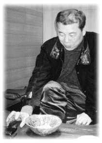

『器・魯山人おじさんに学んだこと』 |
| 黒田草臣さんの父上、領治氏は、十把一絡げに「せともの」と呼んでいた器に光をあて、陶芸家の育成に尽力。器を通して陶芸という一分野を確立させ、陶芸家の社会的基盤の向上に心血を注いだ人である。それほどまでに陶芸へ駆り立てたものは、ひとえに魯山人との出会いがきっかけであった、という。 その魯山人のもとへ小さいころから使いにやらされたのが草臣さん。長じて父親と同じ道を歩むことになったが、父に勝るとも劣らない焼き物好き。「しぶや黒田陶苑」の主人として店に立つ。焼き物のことを喋らせれば人後に落ちない。彼の話を聞くうちに焼き物にはまってしまった人、数知れず。『器―魯山人おじさんに学んだこと』は、そんな黒田さんならではの目がとらえた陶芸の魅力が、行間からこぼれる。 |
■ 近所に住む親しいおじさんだった魯山人 |
黒田 高校受験の時、面接で「小さくても自分の店持ちたい」って答えたんです。別に焼き物屋って意識はなかったのですが、先生からそのこと聞いたお袋に「小さな店なんて、チンケな理想ね」と言われた事覚えていますね。僕は、小粒でもぴりりとした店を描いていたのですが。でも、今思うと当時からベッドの下に、自分の好きなものを隠していましたね、魯山人の「清風」という額と、古伊万里の花瓶です。当時からつんつるてんって好きではなかったんですね。隠した古伊万里は磁器ですが、染錦で貫入が入っている色絵としては古い手でした。 |
 |
|
黒田草臣（くろだ・くさおみ） |